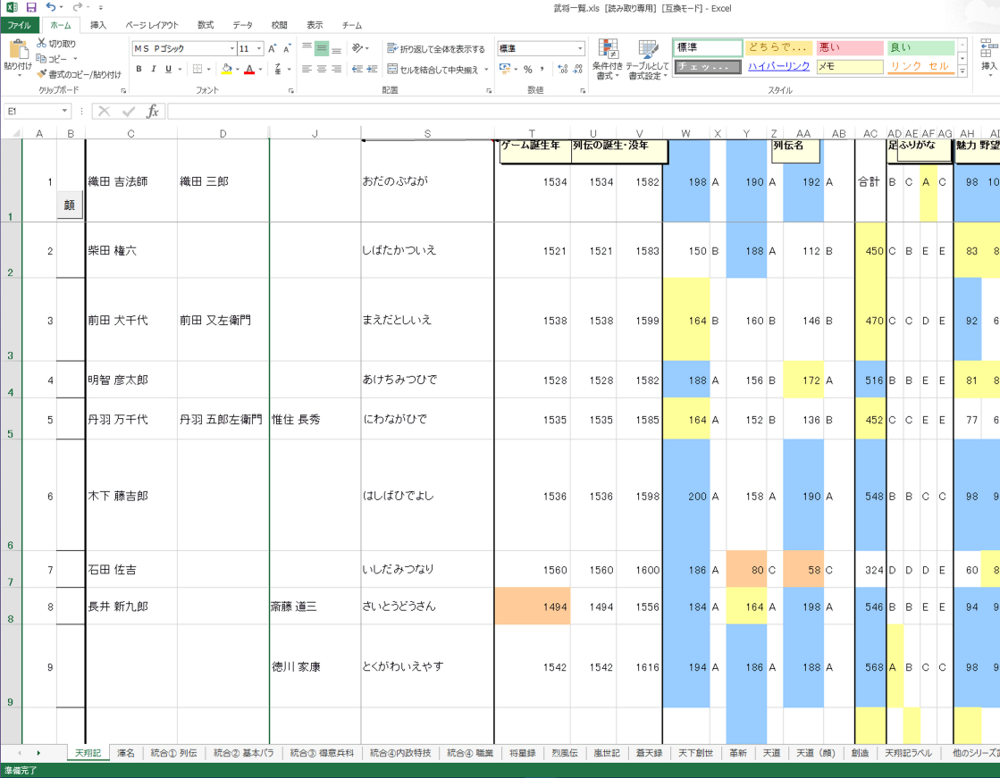

天翔記の武将には、一連のIDが振られています。
このIDは、顔グラのIDでもあり、列伝のIDでもあります。
天翔記において、「この武将が一体誰なのか？」は、名前ではなく、このIDによって決定されています。
Excel内では、天翔記1300人の武将がID順で一覧となっており、各能力が閲覧できます。
自由な閲覧・フィルター・条件付書式化・マクロ化等が可能です。

他のシートにも様々な情報が掲載されており、
「天翔記に登場した武将が、それ以降の信長シリーズでは、何番のIDか？」
といったチェックも可能となっています。
火間虫入道サイトの『信長の野望 天翔記』武将総覧
でも検索や閲覧が可能です。